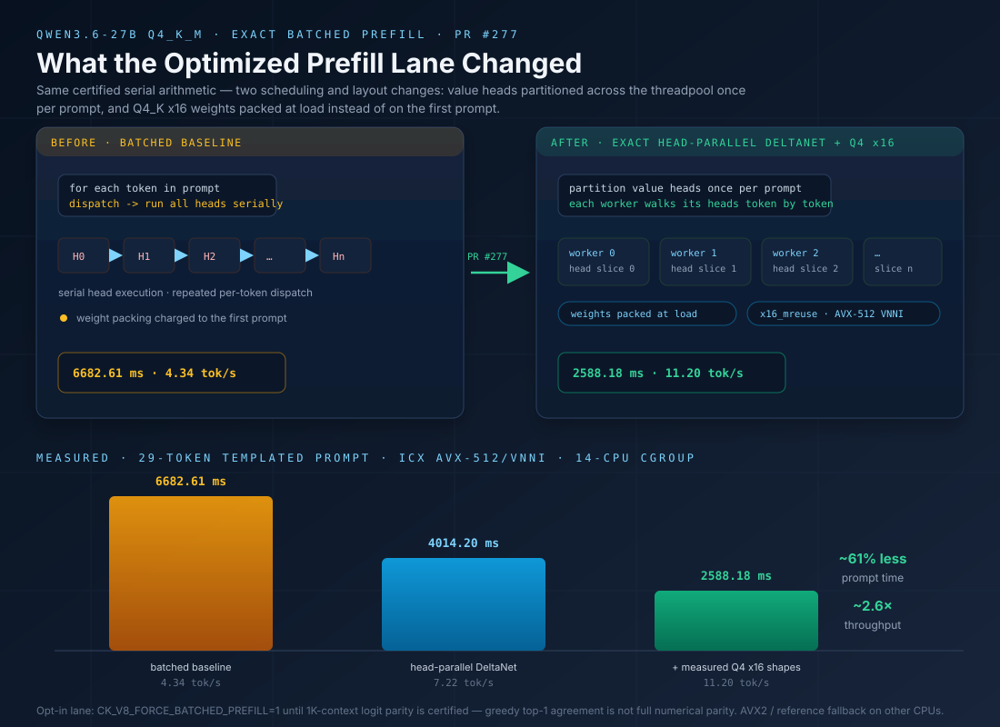

v8 Inference Runbook
This is the operator runbook for the current v8 inference lane:
promoted text-family bring-up through the v8 runner surface plus the validated
Qwen3-VL-8B-Instruct multimodal path with the matching
mmproj-Qwen3VL-8B-Instruct encoder projection file.
v8 now has a credible inference surface for promoted text-family bring-up and the tested Qwen3-VL pair runs encoder -> bridge -> decoder end to end with coherent captions instead of stop-marker or prompt-shell garbage.
What This Runbook Covers
Three things: the promoted text-family v8 bring-up commands, the one multimodal family that is validated today, and the Whisper Tiny audio lane within its certified scope.
It does not claim that unrelated multimodal families are ready in v8.
Validated Pair
Decoder GGUF:hf://Qwen/Qwen3-VL-8B-Instruct-GGUF/Qwen3VL-8B-Instruct-Q4_K_M.gguf
mmproj GGUF example path:./mmproj-Qwen3VL-8B-Instruct-Q8_0.gguf
Use a matching decoder/mmproj pair. If those drift apart, the bridge result is not meaningful.
v8 is the inference bring-up lane. Training workflows remain in v7.
Overnight Demo Readiness
One command before a demo
Run the capacity-aware compatibility sweep before leaving the machine overnight. It exercises the promoted decoder families, compiler and memory-plan contracts, llama.cpp numerical gates, Instella, audio, vision, configured high-memory models, and both Qwen private OCR corpora.
make nightly-demo-readiness
In the morning, open build/demo-readiness/nightly-latest.md. The machine-readable evidence is written to build/demo-readiness/nightly-latest.json. A configured lane that breaks is a failure; an optional model or private corpus that is not configured is shown explicitly as SKIP.
Private OCR output is redacted from the aggregate report. Configure Qwen3-VL with CK_QWEN3VL_OCR_MANIFEST, configure Qwen3.6-VL with CK_QWEN36VL_OCR_MANIFEST, CK_QWEN36VL_DECODER_GGUF, and CK_QWEN36VL_ENCODER_RUNTIME, and point CK_LLAMA_CPP_ROOT at the pinned llama.cpp oracle. Existing completed corpus cases resume instead of being repeated.
Long-context capacity and quality sweep
Run the resumable long-context matrix separately from demo readiness. It visits every configured family at 2K, 8K, 32K, 64K, 128K, and 256K tokens, where supported. The 64K, 128K, and 256K rows are the long-context certification region. Every row records exact consumed-token evidence, input hashes, prefill/decode wall time, average active cores, peak RSS, first-logit repeatability, selected generated providers, and matched llama.cpp performance when a local GGUF oracle is available. By default, a CKE performance row fails when average occupancy is below half of the requested worker count; override --min-active-core-fraction only for a documented topology experiment.
V8_LONG_CONTEXT_ARGS="--allow-download --threads 16" \ make certify-v8-long-context
Run the engineering-quality phase independently when you need reviewable outputs before the multi-day capacity ladder finishes. Every model receives the same complete FP32 RoPE task. Its extracted C source is checked with a strict syntax-only compiler invocation, then passed verbatim back to the model to produce a matching standalone SVG. Generated code is never executed automatically. The gate proves artifact structure, not algorithmic correctness; human review and a numerical oracle remain mandatory before a generated kernel can enter CKE.
V8_ENGINEERING_QUALITY_ARGS="--allow-download --threads 16" \ make certify-v8-engineering-quality
To certify a full 128K generation envelope, allocate the total context explicitly. Here --quality-context 8192 reserves room for the prompt and --quality-total-context 131072 is the exact compiled runtime capacity. Decode receives every remaining token after the reserve and safety margin, and normally stops on the model's EOS signal. The report records the allocated context, effective output budget, consumed tokens, and native stop reason; it does not relabel an 8K+8K run as 128K.
V8_ENGINEERING_QUALITY_ARGS="--allow-download --threads 0 --cpu-policy physical --quality-context 8192 --quality-total-context 131072" \ make certify-v8-engineering-quality
Configure local checkpoints with V8_QWEN36_MODEL, V8_QWEN38_MODEL, V8_QWEN35_MOE_MODEL, V8_GEMMA4_MODEL, V8_GLM4_MODEL, V8_NEMOTRON9_MODEL, V8_INSTELLA_MODEL, V8_KIMI_MODEL, V8_LAGUNA_MODEL, and V8_COHERE2_MODEL. The corresponding V8_*_GGUF variables may identify a separate llama.cpp oracle. Reports are written incrementally to build/v8-long-context-certification/summary.md and summary.json, so an interrupted multi-day run resumes completed rows. Qwen3.6-VL is intentionally excluded from this text matrix and remains covered by make test-qwen36vl-private-corpus-parity-auto, which exercises its encoder, bridge, decoder, and 40-image OCR corpus.
The capacity matrix uses a deterministic fixed-token sequence so exact consumption, hashes, timing, and oracle comparisons remain reproducible. It does not claim that normal prompts should fill every supported context window. The standalone engineering command writes to build/v8-engineering-quality/quality/: open index.html for the readable gallery, or inspect each model's exact prompt, raw response, clean .c/.svg artifact, compiler logs, trace, and validation JSON. Repository, documentation, retrieval, and multi-turn application corpora are the next certification layer.
How The Vision Side Works
If you want the architecture view instead of the operator commands, read v8 Vision Encoder Architecture. That page explains how the encoder graph is derived from GGUF + template + lowering and how the bridge hands the prefix into the decoder.
For parity-specific investigation, see Vision Encoder Parity.
How The Audio Side Works
Whisper Tiny transcription runs through the same circuit and kernel-contract path: generated FP32 encoder and decoder from PCM16 WAV, with nightly audio gates and an opt-in end-to-end artifact test. See Whisper Tiny End-to-End for the pipeline diagram, usage, evidence, and current limitations.
Prerequisites
Supported Host
- Linux host with a working C toolchain and Python 3.
- Repo-local
.venvwithrequirements-v8.txt, or letcks-v8-runbootstrap it interactively. - A local Qwen3-VL mmproj file available at a known path.
python3 -m venv .venv . .venv/bin/activate python -m pip install --upgrade pip python -m pip install -r requirements-v8.txt
Canonical Text Bring-Up
Current Large-Model Evidence
Support levels are intentionally separate: coherent execution does not imply bit-exact numerical parity, multimodal support, long-trajectory certification, or competitive performance.
| Family | Real-weight execution | Numerical evidence | Open boundary |
|---|---|---|---|
| Qwen3.8 27B dense Q4_K_M | Coherent long text; six complete 131,072-token engineering-artifact runs | 4,000/4,000 full-vocabulary rows and 4,011 internal rows bit-exact to llama.cpp | 128K execution and SVG quality are demonstrated; 128K bit-exact parity and matched performance remain separate. Artifact gallery |
| Qwen3.5 35B-A3B Q4_K_M | Coherent text E2E | Quantized provider and trajectory gates are available | Continue long-context performance and broader prompt certification |
| Nemotron Nano 9B v2 Q4_K_M | Coherent text E2E | Mamba2/compiler contracts plus runtime smoke | Broader long-trajectory parity and performance |
| GLM4 9B Q4_K_M | Coherent text E2E | Partial-RoPE, FP16-KV, and llama.cpp parity coverage | Keep long-context and ISA regression lanes active |
| Instella-MoE 16B-A3B BF16 | Coherent short text E2E | Top-1 matches PyTorch at the tested checkpoint; full-logit cosine 0.999976927 | Short checkpoint only; quantized GGUF and long trajectories are not certified |
| Kimi-VL A3B BF16 text decoder | Coherent and repeatable text E2E on Intel AVX2 and Ryzen AVX-512 | First token and top-20 ranking match PyTorch; full-logit cosine 0.997696 | Internal drift becomes material near layer 7; MoonViT bridge is not certified |
| Laguna-XS 2.1 Q4_K_M | Coherent text E2E; all 684 mapped entries converted | Embedding and layer-0 RMSNorm are bit-exact; identical-input router replay preserves selected experts and routing weights within one ULP | The current llama.cpp Laguna loader omits the GGUF YaRN beta metadata; after oracle alignment, small attention/projection drift still changes a near-tied MoE route |
| Cohere2 Command R Q4_K_M | GGUF Q4_K_M bring-up — 8-token llama.cpp replay agreement on Command R7B; long-trajectory parity pending | Tokenizer-free replay matches llama.cpp for the first 8 greedy positions | Long-trajectory parity and matched performance sweeps |
Use this path when you want inference-only runs without training a local model.
These raw CLI examples use the shell wrapper so a first-time user can be prompted to create .venv and install requirements-v8.txt if the repo-local environment is missing.
Gemma 3 270M
version/v8/scripts/cks-v8-run run \ hf://unsloth/gemma-3-270m-it-GGUF/gemma-3-270m-it-Q5_K_M.gguf \ --context-len 1024 --force-compile --force-convert --chat-template=auto \ --generate-visualizer
Gemma 4 E4B IT
.venv/bin/python version/v8/scripts/ck_run_v8.py run \ hf://unsloth/gemma-4-E4B-it-GGUF/gemma-4-E4B-it-Q4_K_M.gguf \ --context-len 2048 \ --force-convert --force-compile \ --prompt 'Give me a detailed example of C code.' \ --chat-template gemma4 \ --max-tokens 1024 \ --temperature 0.0
Use this as the current Gemma4 GGUF coherence smoke. A healthy run should produce a normal long answer and stop by EOS or --max-tokens, not by prompt-marker echo or language corruption. The tested local Q4_K_M run generated 1024 coherent C-code tokens; performance work remains separate.
Gemma 4 Assistant / MTP Drafter
.venv/bin/python version/v8/scripts/ck_run_v8.py run \ hf://google/gemma-4-E4B-it-assistant \ --run /tmp/ck-gemma4-assistant-runtime \ --context-len 1024 \ --force-convert --force-compile \ --generate-only \ --chat-template none \ --allow-raw-prompt
The assistant artifact is a tiny speculative/MTP drafter, not a standalone chat model. A healthy bring-up converts safetensors directly to BUMP, lowers q-only shared-KV attention, generates C, and compiles libmodel.so. Real chat speedup comes only after pairing this runtime with a compatible Gemma4 backbone via --speculative-draft-model-dir.
Nemotron Nano 9B v2
.venv/bin/python version/v8/scripts/ck_run_v8.py run \ hf://bartowski/nvidia_NVIDIA-Nemotron-Nano-9B-v2-GGUF/nvidia_NVIDIA-Nemotron-Nano-9B-v2-Q4_K_M.gguf \ --context-len 2048 \ --force-convert --force-compile \ --prompt 'Give me a concise example of C code.' \ --chat-template auto \ --max-tokens 256 \ --temperature 0.0
Use this as the current Nemotron-H / Mamba2 GGUF smoke. Native BPE text encode is enabled by default for generated BPE runtimes; set CK_DISABLE_FULL_BPE_TOKENIZER=1 only when you intentionally want token-id prompts plus lightweight token display. A healthy run should produce normal instructional text, not token-zero collapse or repeated punctuation.
GLM4
version/v8/scripts/cks-v8-run run \ hf://unsloth/GLM-4-9B-0414-GGUF/GLM-4-9B-0414-Q4_K_M.gguf \ --context-len 1034 \ --force-convert --force-compile \ --chat-template glm4 \ --prompt 'Give me a detailed example of C, Python and SQL code.' \ --max-tokens 256 \ --temperature 0.0
GLM4 has a real Q4_K_M runtime lane with partial pairwise RoPE, persistent FP16 KV cache, and llama.cpp parity coverage. --force-compile force-builds both libckernel_engine.so and libckernel_tokenizer.so, compiles the generated model into a staging directory, verifies that the complete bundle loads without unresolved symbols, and only then replaces the cached runtime. No manual library copy is required.
Kimi-VL A3B Text Decoder
.venv/bin/python version/v8/scripts/ck_run_v8.py run \ /path/to/moonshotai--Kimi-VL-A3B-Instruct \ --run /srv/cke/profiles/kimi-vl-a3b-instruct \ --context-len 2048 \ --force-convert --force-compile \ --prompt 'Give me a concise example of safe C code.' \ --chat-template kimi_vl \ --max-tokens 64 \ --temperature 0.0 # Capacity-aware nightly smoke using the same source directory: V8_KIMI_MODEL=/path/to/moonshotai--Kimi-VL-A3B-Instruct \ make test-v8-kimi-highmem
The official 32.8 GB sharded checkpoint now converts all text-decoder tensors, preserves the embedded TikToken protocol, and runs coherently on a 64 GB host. Three repeated Ryzen runs produced the same 32-token response hash. X-Ray matched PyTorch's first token and complete top-20 ranking, but internal BF16 drift becomes material around layer 7, so this is text E2E certification rather than bit-exact internal parity. MoonViT and the multimodal bridge remain outside the certified path. See v8 MLA / Kimi Decode Cache for the architecture notes.
Laguna-XS 2.1
.venv/bin/python version/v8/scripts/ck_run_v8.py run \ /path/to/Laguna-XS-2.1-Q4_K_M.gguf \ --run /srv/cke/profiles/laguna-xs-2.1 \ --context-len 2048 \ --force-convert --force-compile \ --prompt 'Write a complete C program that prints the first ten Fibonacci numbers.' \ --chat-template auto \ --thinking-mode suppressed \ --max-tokens 512 \ --temperature 0.0
The tested 20.27 GB Q4_K_M artifact converts all 684 mapped entries and produces coherent text and compilable C on Ryzen. The circuit declares full versus sliding attention, RoPE width, softplus attention gating, and mixed Q4/Q6 expert providers without a Laguna branch in compiler or code generation. Visible thinking is supported but can consume more than 1,024 tokens before the final answer; use a larger output budget when testing that mode. This is coherent E2E bring-up with strong leaf evidence, not long-trajectory bit-exact certification.
Cohere2 Command R
version/v8/scripts/cks-v8-run run \ /path/to/command-r7b-q4_k_m.gguf \ --context-len 2048 --force-compile --force-convert --chat-template=auto \ --max-tokens 64 --temperature 0.0
Cohere2 needs no family-specific flag: the GGUF model map routes it to the cohere2 circuit automatically. Contract test: python -m unittest tests.test_v8_cohere2_contract.
Qwen2 0.5B Instruct
version/v8/scripts/cks-v8-run run \ hf://Qwen/Qwen2-0.5B-Instruct-GGUF/qwen2-0_5b-instruct-q4_k_m.gguf \ --context-len 1024 --force-compile --force-convert \ --generate-visualizer
Qwen3 0.6B
version/v8/scripts/cks-v8-run run \ hf://Qwen/Qwen3-0.6B-GGUF/Qwen3-0.6B-Q8_0.gguf \ --context-len 1024 \ --force-convert --force-compile \ --generate-visualizer
Qwen3.5 0.8B
python3 version/v8/scripts/ck_run_v8.py run \ hf://unsloth/Qwen3.5-0.8B-GGUF/Qwen3.5-0.8B-Q4_K_M.gguf \ --force-convert --force-compile \ --context-len 1034
The canonical v8 bring-up path is the hf://... URI. That materializes the run under ${CK_CACHE_DIR:-$HOME/.cache/ck-engine-v8/models}/unsloth--Qwen3.5-0.8B-GGUF. Local GGUF paths are still supported when you intentionally want an offline or copied artifact.
If the first reply echoes
<|im_start|>assistant or starts with <think>, the prompt is being fed with the wrong chat wrapper or stop markers. For NaanBeige, keep the default --chat-template auto, prefer --python-tokenizer on first bring-up, and do not force --chat-template none unless you are testing raw logits on purpose.
NaanBeige 4.1 3B
version/v8/scripts/cks-v8-run run \ hf://mradermacher/Nanbeige4.1-3B-GGUF/Nanbeige4.1-3B.Q4_K_M.gguf \ --context-len 1024 --force-compile --force-convert \ --chat-template auto \ --generate-visualizer
Current scope: these are the validated v8 text-family operator surfaces. The multimodal Qwen3-VL path remains the promoted vision baseline; Gemma4 vision now has a high-memory bridge smoke lane for second-family coverage.
High-Memory v8 Smoke Targets
Gemma4 text, Gemma4 vision, and Nemotron Nano 9B v2 are intentionally tracked as high-memory smoke lanes. They should appear in nightly/test reports, but skip cleanly on smaller runners instead of pretending the model family is untested.
make test-v8-gemma4-highmem make test-v8-gemma4-vision-smoke make test-v8-nemotron9-highmem # Lower the threshold only when you intentionally want to run locally: V8_GEMMA4_MIN_MEM_GB=24 make test-v8-gemma4-highmem V8_NEMOTRON9_MIN_MEM_GB=24 make test-v8-nemotron9-highmem
These tests are coherence/runtime smokes, not performance gates. They validate that the v8 conversion, compile, tokenizer/chat-template path, and first generated tokens remain sane for large model families.
Text-Family Notes
- Gemma 3: use
--chat-template autofor normal instruction/chat runs.--chat-template noneis raw continuation mode now and needs--allow-raw-promptif you intentionally want it. - Gemma 4: use
--chat-template gemma4. The template uses explicit per-layer/direct split-half RoPE metadata; do not replace it with the older global split-half RoPE path when debugging. - Nemotron Nano 9B v2: use
--chat-template auto. The BPE runtime should encode raw prompts by default; setCK_DISABLE_FULL_BPE_TOKENIZER=1only for token-id fallback/debug runs. - GLM4: the real Q4_K_M path executes coherently and carries partial-RoPE, persistent FP16-KV, and llama.cpp parity coverage. Keep it in long-context and ISA regression sweeps.
- Instella-MoE: BF16 text executes coherently with strong short-checkpoint PyTorch agreement. Do not describe quantized GGUF or long trajectories as certified yet.
- Kimi-VL: the BF16 text decoder is coherent and repeatable; use
--chat-template kimi_vl. Vision remains unimplemented, and the current X-Ray evidence is ranking parity rather than bit-exact internal parity. - Laguna-XS 2.1: Q4_K_M text executes coherently and the mixed global/sliding circuit is map-owned. CKE preserves the GGUF's YaRN
beta_fast=64; the current external llama.cpp Laguna loader defaults that value to 32. Even with a metadata-aligned diagnostic oracle, small attention/projection drift can change a near-tied MoE route, so long-trajectory parity remains open. - Cohere2: pairwise RoPE applies to sliding layers only; the model-declared
logit_scaleruns as afinal_logit_scale_f32footer op. Long-trajectory parity and performance sweeps are not certified yet. - Qwen2 / Qwen3 / Qwen3.5: the
v8runner now reproduces the same public command shapes asv7and clean short prompt smokes succeed on the promoted examples. - NaanBeige / llama-family symptom: if the first reply echoes
<|im_start|>assistantor starts with<think>, keep--chat-template auto, do not forcenone, and treat it as a prompt-wrapper/chat-contract symptom rather than the expected reply.
New Model Compatibility Workflow
- Start with safetensors when available. Convert safetensors to BUMP and compare CK against PyTorch with BF16/FP32 weights. This isolates graph stitching, RoPE placement, activation math, and layer contracts before quantization enters the picture.
- Then bring up GGUF. Convert GGUF to BUMP and compare CK against llama.cpp. This catches tokenizer/template behavior, tied versus untied heads, quantized projection layouts, and stop-token policy.
- Only optimize after parity is understood. Once BF16/FP32 graph parity and GGUF coherence are clean, profile Q4_K/Q5_K/Q6_K/Q8_K kernels and threadpool scheduling separately.
Gemma4 followed this route: BF16 safetensors proved the split-direct RoPE circuit against PyTorch, then the GGUF Q4_K_M path reused the same IR/kernel contract for coherent long-answer smoke testing.
Qwen3.6 Q4_K_M Optimized Prefill
PR #277 landed an exact batched-prefill optimization lane for
Qwen3.6-27B Q4_K_M (merge c0a04690, engineering note
docs/notes/QWEN36_EXACT_BATCHED_PREFILL_2026-07-30.md). It provides two principal optimizations:
- Exact head-parallel DeltaNet prefill. Independent value heads are partitioned across the threadpool once per prompt, and each worker advances its assigned heads through the tokens in order. This preserves CKE's certified serial arithmetic while avoiding serial head execution and repeated per-token dispatch.
- AVX-512 VNNI x16 Q4_K prefill projections. The existing
Q4_K x Q8_KAVX-512 VNNI x16 provider is used for the measured Qwen3.6 prefill projection shapes, and the packed weights are prepared during model loading instead of being charged to the first prompt.

Test The Optimized Lane
CK_V8_COMPILER=icx \ CK_BUMP_FORCE_MIXED=1 \ CK_NUM_THREADS=14 \ CK_V8_FORCE_BATCHED_PREFILL=1 \ CK_DEBUG_Q4K_PREFILL_DISPATCH=1 \ .venv/bin/python \ version/v8/scripts/ck_run_v8.py run \ /path/to/qwen36-runtime \ --prompt "Give me a detailed explanation with working examples of C, Python, and SQL code." \ --chat-template qwen35 \ --thinking-mode suppressed \ --temperature 0 \ --max-tokens 64 \ --context-len 1034
First test with 64 output tokens. Raising --max-tokens exercises longer decode, not longer prefill — to probe prefill behavior and long-prefix parity, lengthen the input prefix (and --context-len) instead. Set CK_NUM_THREADS to match your host's CPU allocation; the measured host ran inside a 14-CPU cgroup.
Confirm Kernel Dispatch
Startup evidence should include a line similar to:
[CK parallel prefill] Prepared 184 AVX-512 VNNI x16 Q4_K weights at load time
With CK_DEBUG_Q4K_PREFILL_DISPATCH=1, the projection diagnostics should show the x16_mreuse provider for the eligible Q4 prefill shapes.
This does not mean every CPU selects AVX-512: AVX-512/VNNI-capable systems may select the x16 provider, while other systems use a certified AVX2 or reference fallback. Kernel selection is intended to become automatic from CPU capability, model metadata, quantization format, and runtime shape; the debug environment variables are diagnostic overrides, not a public configuration surface.
Measured Result
| Configuration | Prompt time | Prompt rate |
|---|---|---|
| Batched baseline | 6682.61 ms | 4.34 tok/s |
| Exact head-parallel DeltaNet | 4014.20 ms | 7.22 tok/s |
| Exact DeltaNet + measured Q4 x16 shapes | 2588.18 ms | 11.20 tok/s |
Two repeated final runs recorded 2552.64 ms (11.36 tok/s) and 2601.74 ms (11.15 tok/s).
That is approximately 61% less prompt time and approximately 2.6x the previous CKE batched-prefill throughput.
Measurement context: Qwen3.6-27B Q4_K_M, a 29-token templated prompt, an ICX native AVX-512/VNNI build, and a 14-CPU cgroup on the measurement host. Do not generalize these numbers to every CPU, compiler, context length, or model.
Batched prefill is still opt-in:
CK_V8_FORCE_BATCHED_PREFILL=1 is temporarily required and the default sequential_decode policy is unchanged. Short-prompt trajectories pass, and greedy top-1 matched at the tested short, 353-token, and 1K-token checkpoints — but full 1K-context logit parity is not certified. At the 1K first step the recorded comparison was cosine 0.865948879, RMSE 2.014045, maximum absolute difference 19.671235. Matching greedy tokens must not be read as complete numerical parity. This drift predates the scheduling/x16 optimization and was not introduced by PR #277.
Planned Automatic Policy
CK_V8_FORCE_BATCHED_PREFILL is a temporary correctness guard, not a permanent user configuration requirement. The intended user experience is automatic selection:
model metadata + quantization + prompt shape + CPU ISA
|
v
certified kernel map
|
v
optimized provider or safe fallback
After long-context numerical parity is closed: Qwen3.6 should automatically use batched prefill, CK_V8_FORCE_BATCHED_PREFILL should no longer be required for normal use, a disable/debug escape hatch may remain for developers, and nightly tests should verify automatic selection without user flags. Remaining performance targets are tracked in the Prefill Performance Roadmap, and kernel/provider coverage is summarized in the Model + Kernel Matrix.
Canonical Gemma4 Vision Bridge Smoke
Second-Family Vision Bridge
Gemma4 vision uses the Gemma4 text decoder with the matching mmproj-F16.gguf encoder artifact. Use the checked-in PPM test image so the smoke path does not depend on Pillow.
version/v8/scripts/cks-v8-run run \ hf://unsloth/gemma-4-E4B-it-GGUF/gemma-4-E4B-it-Q4_K_M.gguf \ --mmproj hf://unsloth/gemma-4-E4B-it-GGUF/mmproj-F16.gguf \ --image-path version/v8/test_assets/v8_vision_doc_card_72.ppm \ --prompt "Explain this image." \ --context-len 1024 \ --force-compile \ --chat-template gemma4 \ --max-tokens 8 \ --temperature 0.0
A healthy smoke converts or reuses the Gemma4 vision encoder, produces a 196-token vision prefix, completes mixed prefill in the Gemma4 decoder, and writes a bridge report. Current scope is bridge correctness; longer semantic parity remains active work.
Canonical Qwen3-VL Vision Run
Real Image Bring-Up
Replace the --mmproj value below if your local mmproj file lives somewhere else.
version/v8/scripts/cks-v8-run run \ hf://Qwen/Qwen3-VL-8B-Instruct-GGUF/Qwen3VL-8B-Instruct-Q4_K_M.gguf \ --mmproj hf://Qwen/Qwen3-VL-8B-Instruct-GGUF/mmproj-Qwen3VL-8B-Instruct-Q8_0.gguf \ --image-path version/v8/test_assets/v8_vision_doc_card_72.ppm \ --prompt "Explain this image." \ --context-len 1024 \ --force-convert --force-compile \ --thinking-mode suppressed
The first run converts the GGUF, lowers/codegens the runtimes, compiles them, runs the encoder bridge, then generates from the decoder.
For a cleaner caption sanity check, add --max-tokens 48 so the current bridge generation loop does not ramble into a long repetition tail.
Synthetic Prefix Probe
For a seam-only smoke test without a real image file, keep the decoder pair but switch to a synthetic prefix:
version/v8/scripts/cks-v8-run run \ hf://Qwen/Qwen3-VL-8B-Instruct-GGUF/Qwen3VL-8B-Instruct-Q4_K_M.gguf \ --mmproj ./mmproj-Qwen3VL-8B-Instruct-Q8_0.gguf \ --image-mode checker \ --prompt "Describe the image." \ --context-len 1024 \ --force-convert --force-compile
Canonical Whisper Audio Run
Audio Runbook — WAV To Transcript
The audio lane runs generated FP32 Whisper Tiny, Base, or Small encoder and decoder artifacts — and a generated frontend:
WAV decode through log-Mel is seven circuit ops lowered into ck_model_run_audio_wav, so the
Python layer coordinates lifecycles only. The unified entrypoint
version/v8/scripts/cks-v8-run audio drives both stages and emits a single JSON report.
Codegen contains no Whisper model-name branch — the same v8 lowering path that carries text and vision
carries the audio circuits in version/v8/circuits/.
Step 1 — Point at the generated artifacts.
Each run directory must contain the generated runtime (libmodel.so) and its sidecars;
the runner refuses to start without them:
export CK_WHISPER_ENCODER_RUN_DIR=/path/to/whisper-tiny-encoder export CK_WHISPER_DECODER_RUN_DIR=/path/to/whisper-tiny-decoder
Step 2 — Prepare the WAV. The frontend expects mono 16 kHz PCM16. Convert any source format first:
ffmpeg -i your-audio.mp3 \ -ac 1 -ar 16000 -c:a pcm_s16le \ /tmp/test-audio.wav
Step 3 — Run the transcription.
version/v8/scripts/cks-v8-run audio \ --encoder-run-dir $CK_WHISPER_ENCODER_RUN_DIR \ --decoder-run-dir $CK_WHISPER_DECODER_RUN_DIR \ --wav /tmp/test-audio.wav \ --language en \ --task transcribe \ --max-tokens 128 \ --output build/whisper-test-report.json
Step 4 — Read the output.
The transcript prints on stdout, a per-stage timing line prints on stderr,
and --output carries the full report ("schema": "cke.whisper_e2e") with
frontend/encoder/prefill/decode seconds, generated token count, stop reason, and SHA-256 of the WAV
and both generated runtimes for provenance.
Practical Local CPU Workflow: YouTube Or Teams
Export meeting media through the service's authorized controls, or use
yt-dlp for public or otherwise authorized YouTube content.
Normalize either source to the same PCM16 contract:
sudo apt install ffmpeg python3 -m pip install --user yt-dlp mkdir -p "$HOME/cke-audio/results" yt-dlp -x --audio-format wav \ -o "$HOME/cke-audio/source.%(ext)s" \ "YOUTUBE_URL" ffmpeg -y \ -i "$HOME/cke-audio/source.wav" \ -ac 1 -ar 16000 -c:a pcm_s16le \ "$HOME/cke-audio/input-16k.wav"
For a Teams, Zoom, or local recording, replace
$HOME/cke-audio/source.wav with the exported MP4, M4A,
MP3, FLAC, or WAV file. Transcribe with Whisper Base:
RUN_DIR="$HOME/.cache/ck-engine-v8/models/whisper-base-local" CK_NUM_THREADS=20 OMP_NUM_THREADS=20 \ version/v8/scripts/cks-v8-run audio hf://openai/whisper-base \ --run "$RUN_DIR" \ --wav "$HOME/cke-audio/input-16k.wav" \ --language en \ --task transcribe \ --max-tokens 448 \ --output "$HOME/cke-audio/results/transcript.json" jq -r '.decoder.transcript_text' \ "$HOME/cke-audio/results/transcript.json" \ > "$HOME/cke-audio/results/transcript.txt"
Audio and transcript data stay local unless the operator separately
uploads them. Recordings longer than 30 seconds use sequential source
windows. The 33-second parity fixture is certified; arbitrary
hour-scale recordings remain functional rather than corpus-certified.
Add --timestamps when timestamp tokens are required.
What Success Looks Like (Audio)
stdoutprints the transcript text — the JFK sample matches the Hugging Face reference token for token.stderrprintsfrontend=...s encoder=...s prefill=...s decode=...s tokens=N stop=eos.- The report JSON contains
"status": "ok"with per-stage timings and runtime hashes.
See Whisper Tiny End-to-End for the pipeline diagram, kernel sources, and parity evidence.
Opt-In E2E Artifact Gate
Nightly already covers the log-Mel frontend against PyTorch, the audio transformer primitives, and the portable v8 audio circuit/codegen regression. Full model-and-WAV transcription stays an opt-in artifact test, because CI runners do not carry the generated Whisper artifacts:
make test-audio CK_WHISPER_ENCODER_RUN_DIR=/path/to/encoder \ CK_WHISPER_DECODER_RUN_DIR=/path/to/decoder \ CK_WHISPER_WAV=/path/to/jfk.wav \ make test-whisper-e2e-auto
The artifact gate requires the full reference token sequence and EOS without tolerance relaxation.
Certified scope: Whisper Tiny, Base, and Small FP32 on the public JFK fixture, plus a 33-second Base long-form fixture. Longer recordings use sequential windows; arbitrary recordings are functional rather than corpus-certified.
Canonical Whisper Audio Bridge
Stage-Split Bridge Run
The audio bridge is the encoder.npy handoff: the generated encoder writes the cross-attention
conditioning, the generated decoder consumes it. The parent run command spawns exactly the two
worker stages below — running them yourself isolates which side of the bridge a failure lives on.
A clean encoder report with garbage decode means the seam; a failed encoder stage means the frontend or encoder.
python version/v8/scripts/run_whisper_v8.py _encoder \ --encoder-run-dir $CK_WHISPER_ENCODER_RUN_DIR \ --wav /tmp/test-audio.wav \ --encoder-output /tmp/whisper-encoder.npy \ --worker-report /tmp/whisper-encoder-report.json
python version/v8/scripts/run_whisper_v8.py _decoder \ --decoder-run-dir $CK_WHISPER_DECODER_RUN_DIR \ --encoder-output /tmp/whisper-encoder.npy \ --language en \ --task transcribe \ --max-tokens 128 \ --worker-report /tmp/whisper-decoder-report.json
Each worker writes its own JSON report, so the encoder side can be validated for shape, timing, and
"status" before the decoder ever runs.
Encoder X-Ray Parity Probe
For checkpoint-level evidence across the encoder side of the bridge,
compare_whisper_encoder_pytorch_v8.py walks the generated encoder stop by stop —
stem conv1 → GELU → conv2 → token-major transpose → per-layer attention and MLP residuals —
against a PyTorch reference, enforcing max-abs and relative-RMSE tolerances per checkpoint.
It needs torch + transformers and a local Hugging Face Whisper checkpoint:
python version/v8/scripts/compare_whisper_encoder_pytorch_v8.py \ --run-dir $CK_WHISPER_ENCODER_RUN_DIR \ --checkpoint /path/to/local/whisper-tiny \ --stops key \ --output build/whisper-encoder-xray.json
The stop table is derived from the architecture dimensions, not the model name, so the same probe carries
to other audio transformer encoders. CI drives the same script through
tests/test_v8_audio_encoder_contract.py in the nightly audio lane.
Compile Once, Run Natively
Python is the build orchestrator: it downloads or reads the model, converts weights, resolves the template and kernel maps, lowers the circuit, generates C, and compiles the model library. It does not need to remain in the production token loop. Build or refresh a model once with the normal v8 runner:
.venv/bin/python version/v8/scripts/ck_run_v8.py run MODEL.gguf \ --force-convert --force-compile \ --prompt "Hello" --max-tokens 1
Then run the generated library, native tokenizer, and generated chat contract directly through the C CLI:
make ck-cli-v8 ./build/ck-cli-v8 \ --lib "$RUN_DIR/ck-kernel-inference.so" \ --weights "$RUN_DIR/weights.bump" \ --manifest "$RUN_DIR/weights_manifest.map" \ --require-generated-abi \ --prompt "Give me a detailed example of C, Python, and SQL code." \ --temperature 0 --top-p 1 --max-tokens 256
The generated model selects the tokenizer implementation, chat formatting, stop-token policy, and
modality capabilities from its compiled contract. temperature and top-p are
request-time sampling parameters; they do not select or alter the tokenizer.
Native Server And FFI Boundary
External Python, Rust, or C hosts should bind include/ck_session_v8.h through
build/libck_session_v8.so. The session loads the generated model once and exposes native
chat formatting, encode, decode, generation, streaming token callbacks, cancellation, reset, timings,
and a versioned capability descriptor.
make ck-session-v8 make test-native-session-v8
Independent requests reset KV and recurrent state by default. Continuation is explicit. A generated runtime missing the required tokenizer or chat capability fails closed instead of guessing from its filename.
Profile The Native Token Loop
Use the C CLI directly so Python startup and orchestration do not contaminate the profile:
perf stat -d -- \ ./build/ck-cli-v8 --lib "$MODEL_SO" --weights "$WEIGHTS" \ --manifest "$MANIFEST" --require-generated-abi \ --prompt "Hello" --max-tokens 64 --quiet-output --no-timing perf record -g --call-graph dwarf -- \ ./build/ck-cli-v8 --lib "$MODEL_SO" --weights "$WEIGHTS" \ --manifest "$MANIFEST" --require-generated-abi \ --prompt "Hello" --max-tokens 64 --quiet-output --no-timing vtune -collect hotspots -result-dir build/vtune-v8-native -- \ ./build/ck-cli-v8 --lib "$MODEL_SO" --weights "$WEIGHTS" \ --manifest "$MANIFEST" --require-generated-abi \ --prompt "Hello" --max-tokens 64 --quiet-output --no-timing
What End-to-End Certification Means
- Tokenizer parity: generated C encode/decode agrees with the declared Hugging Face or reference tokenizer.
- Model parity: identical token IDs produce the required logits or generated token trajectory against the numerical oracle.
- Native product parity:
ck-cli-v8performs generated chat formatting, C tokenization, model execution, generated stop policy, and C detokenization without Python in the request path.
What Success Looks Like
- The bridge logs reach
[v8-bridge] done report=.... - A bridge report exists under the model cache and contains
"status": "ok". - The generated caption is coherent natural language, not raw stop tokens,
/no_think, or an empty assistant turn.
A healthy prompt shell uses the GGUF chat template in auto mode and preserves the vision markers around <image_embeds>.
IR Hub Quick Launch
Generate and open the parent dashboard for all v8 runs under $HOME/.cache/ck-engine-v8/models.
.venv/bin/python version/v8/tools/open_ir_hub_v8.py --open
Cache-backed inference, training, profiling, and multimodal runs appear automatically when their artifacts use the canonical v8 model root.
Headless Server Access
When the server has no window manager, serve the canonical model root and use an SSH tunnel. Keeping the HTTP server on loopback avoids exposing unauthenticated reports to the surrounding network.
# Run on the headless CKE server.
cd "${CK_CACHE_DIR:-$HOME/.cache/ck-engine-v8/models}"
python3 -m http.server 7021 --bind 127.0.0.1
# Run on the workstation that has a browser.
ssh -L 7021:127.0.0.1:7021 USER@SERVER
# Then open:
http://127.0.0.1:7021/ir_hub.html
On a trusted LAN or Tailscale network, binding with --bind 0.0.0.0 makes the hub reachable at
http://SERVER_IP:7021/ir_hub.html. Python's development server provides no authentication or TLS;
do not expose it directly to the public internet.
Artifacts To Inspect
v8 has its own operator artifact surface. It is not only a decoder dump:
text runs can emit an ir_report.html, the v8 hub indexes run directories,
and multimodal runs carry encoder → bridge → decoder artifacts that the visualizer can render as a single circuit.
ir_report.html shows lowered ops, memory layout, kernel flow, profile artifacts, parity notes, and generated commands for a single v8 run.
ir_hub_v8.html indexes cache-backed v8 runs and links reports, bridge outputs, dataset viewers, embeddings, attention exports, and probe reports.
Qwen3-VL/Gemma4V bridge reports expose encoder runtime, projected visual prefix, decoder mixed prefill, generated text, and profiler summaries.
The v8 viewer reuses the contract-tested tab model for staged data, tokenizer, vocabulary, quality, embeddings, and attention inspection.
| Artifact | Purpose |
|---|---|
~/.cache/ck-engine-v8/models/.../ir_report.html |
Single-run v8 IR visualizer report. Generated automatically by --generate-visualizer or explicitly with open_ir_visualizer_v8.py. |
~/.cache/ck-engine-v8/models/ir_hub_v8.html |
v8 run hub for scanning all cache-backed inference, bridge, probe, and viewer artifacts. |
~/.cache/ck-engine-v8/models/.../multimodal_bridge/bridge_report.json |
Final bridge status, prompt accounting, prefix grid, and generated text. |
~/.cache/ck-engine-v8/models/.../multimodal_bridge/encoder/ |
Encoder-side lowered IR, compiled runtime, and bridge artifacts. |
~/.cache/ck-engine-v8/models/.../multimodal_bridge/decoder/ |
Decoder lowered IR, generated C, compiled shared library, and decode bridge artifacts. |
# Generate or refresh a v8 IR visualizer report for one run.
.venv/bin/python version/v8/tools/open_ir_visualizer_v8.py \
--generate --run "$RUN" --html-only --strict-run-artifacts \
--output "$RUN/ir_report.html"
# Refresh the v8 run hub.
.venv/bin/python version/v8/tools/open_ir_hub_v8.py \
--models-root "${CK_CACHE_DIR:-$HOME/.cache/ck-engine-v8/models}" \
--output "${CK_CACHE_DIR:-$HOME/.cache/ck-engine-v8/models}/ir_hub_v8.html"
# List local v8 runtimes.
./build/ck-cli-v8 --list
Visualizer And Hub Gates
Use these gates when changing v8 visualizer tabs, embedded JSON, run-hub discovery, dataset viewer contracts, or multimodal bridge artifacts. They are intentionally fast enough to run locally before a PR.
# Source-level tab/function/DOM contracts plus pure JS utility checks. make v8-visualizer-health # Generate and validate ir_report.html, dataset_viewer.html, and ir_hub_v8.html. make v8-visualizer-generated-e2e # Validate encoder + bridge + decoder visualizer rendering for a synthetic vision run. make v8-visualizer-vision-artifacts
v7 still owns the promoted training/backprop visualizer lane. v8 now owns inference and multimodal observability: lowered decoder graphs, generated C metadata, logical memory, kernel-flow summaries, bridge reports, and vision-prefix dataflow.
Troubleshooting
- If you omit
--image-path, the bridge uses a synthetic image path. That is useful for seam probes, not for validating real-image captioning. - If the bridge report is missing, check disk space first. The first compile path writes large intermediate artifacts.
- If output starts echoing raw chat markers or thinking-control strings, keep
--chat-template autoand do not force a manual template override on this model. - If captions are incoherent again, verify that the decoder GGUF and mmproj GGUF are the matching Qwen3-VL pair.
Support Statement
The tested Qwen3-VL artifact pair works in
v8 for end-to-end multimodal inference bring-up. That does not automatically extend to unrelated model families or future multimodal templates that need kernels the engine does not have yet.